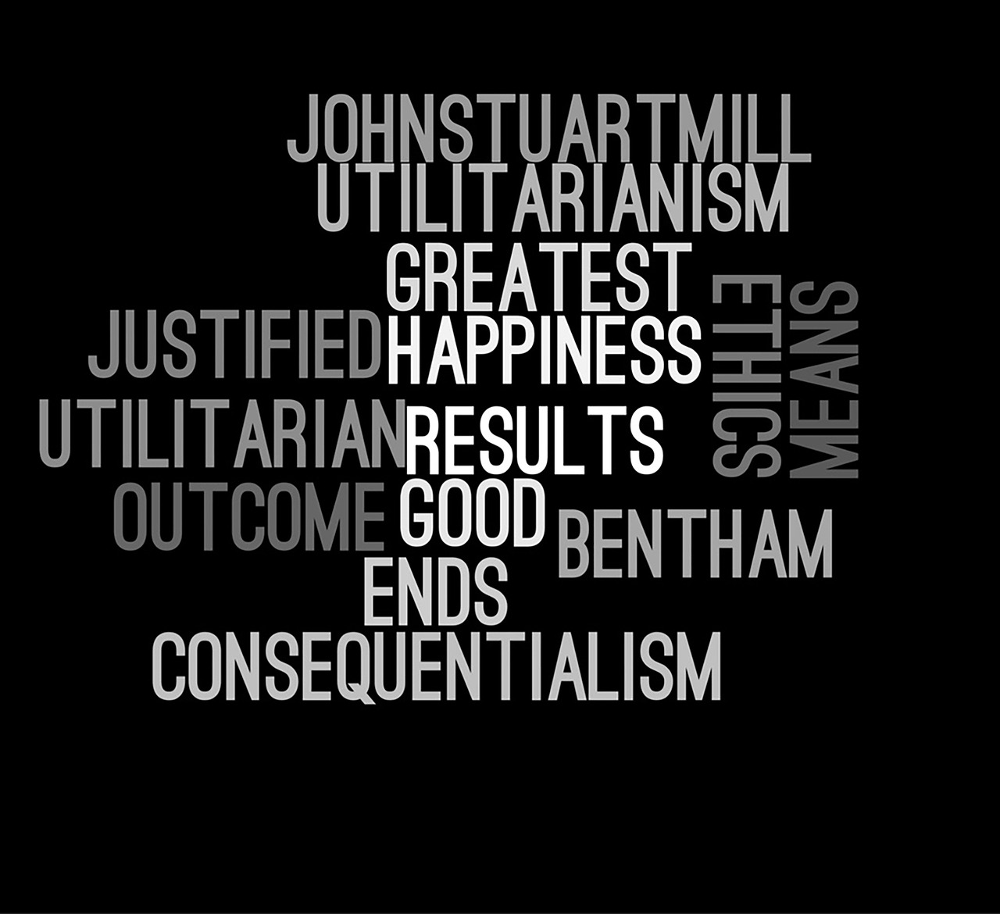

Explore resources for the IB DP TOK course.
THEORY OF KNOWLEDGE
-
Introduction to knowledge
This topic examines the basis of measurements, essential for understanding in Physics.
Visit topic website -

AOK History
This topic examines the basic physics of motion, forces, energy and power.
Visit topic website -

AOK Natural Sciences
This topic examines how energy flows and internal energy affect temperature and phase.
Visit topic website -

AOK Human Sciences
This topic examines how the physics and mathematics of waves and oscillations.
Visit topic website -
AOK Mathematics
This topic examines the related phenomena of electricity and magentism.
Visit topic website -

AOK The Arts
This topic combines elements of mechanics and oscillations with gravity.
Visit topic website -
 AOK Ethics
This topic Looks at the physics of atoms and sub-atomic particles.
Visit topic website -
AOK Indigenous Knowledge Systems
This topic Looks at, and beyond, the physics of energy production.
Visit topic website -
AOK Religious Knowledge Systems
This HL topic takes a deeper look at the physics of waves.
Visit topic website -

WOK Language
This HL topic takes a deeper look at the physics of gravitational and EM fields.
Visit topic website -
WOK Sense Perception
This HL topic takes a deep look at the physics and applications of induction.
Visit topic website -
WOK Reason
This HL topic takes a deeper look at the the nature of reality at the atomic scale.
Visit topic website -
WOK Emotion
This option covers the theory of relativity and its consequences.
Visit topic website -
WOK Intuition
This option covers a variety of topics of interest to engineers, inc. mechanics and thermal.
Visit topic website -
WOK Imagination
This option examines both natural and machine imaging systems.
Visit topic website -
WOK Memory
This option covers the physics of the universe: its contents and its history.
Visit topic website -
WOK Faith
Found here are resources useful for supporting the DP Physics IA.
Visit topic website -
ASSESSMENT Presentation
Found here are resources useful for supporting the TOK Presentation.
Visit topic website -
ASSESSMENT Essay
Found here are resources useful for supporting the TOK Essay.
Visit topic website